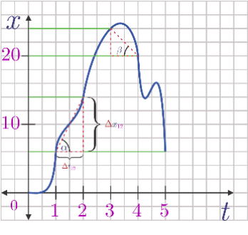

# Gerak - Kerangka acuan - Gerak Lurus Beraturan - Gerak Lurus Berubah Beraturan - Gerak Parabola - Gerak Melingkar --- - Kapan benda disebut bergerak? --- ### Kerangka acuan - Menunjuk hubungan antara pengamat dan obyek yang diamati - Kadang, kerangka acuan tidak disebutkan. Ini biasanya berarti bahwa pengamat ada dalam kerangka acuan yang sama dengan obyek yang diamati. - Untuk memudahkan pemahaman dan memberikan gambaran yang lebih tepat mengenai kerangka acuan, sering kali digunakan koordinat Cartesian. --- **Sebuah benda dikatakan bergerak jika posisinya berubah terhadap kerangka acuan.** --- ### Gerak Lurus - Gerak lurus adalah gerak yang lintasannya dianggap sebagai lurus - Bukan berarti bahwa benda hanya bergerak ke satu arah saja (benda bisa juga berbalik arah), tetapi bahwa gerakannya hanyalah satu dimensi saja (vertikal atau horizontal). --- <img src="../resources/images/glb00.png" style="width:640px;background-color: whitesmoke"> - Andaikan sebuah benda bergerak dalam lintasan lurus seperti gambar di atas. Pada waktu *t = t<sub>1</sub>*, benda berada pada posisi *x = x<sub>t1</sub>*, pada *t = t<sub>2</sub>*, benda ada di *x = x<sub>t2</sub>*, dst. - Arah ke kanan, dalam kasus ini dipilih sebagai arah positif. - Kerangka acuan adalah *x<sub>0</sub>* --- ### Posisi, Perpindahan dan Jarak - Posisi *x = x<sub>t1</sub>* dapat dituliskan sebagai +6 satuan. - **Perpindahan adalah perubahan posisi benda selama perubahan waktu tertentu (vektor)** - Perpindahan selama *t = t<sub>0</sub>* sampai *t = t<sub>1</sub>* adalah dari *x = x<sub>t0</sub>* ke *x = x<sub>t1</sub>*, yakni sebesar 6 satuan. Demikian pula, perpindahan selama *t = t<sub>1</sub>* sampai *t = t<sub>2</sub>*, adalah 8 satuan, dst. Sehingga perpindahan dapat dirumuskan sebagai ###### `$$\Delta x_{12}=x_2-x_1$$` --- Keterangan: - *Δx* = Perpindahan (m) - *x<sub>1</sub>* = Posisi awal (m) - *x<sub>2</sub>* = Posisi akhir (m) **Jarak didefinisikan sebagai panjang lintasan yang ditempuh benda selama selang waktu tertentu (skalar).** ###### `$$s=x_2-x_1$$` --- ### Kecepatan Rata-rata, Kecepatan Sesaat, Kelajuan Rata-rata, Kelajuan Sesaat --- - **Kelajuan rata-rata** didefinisikan sebagai hasil bagi antara total jarak tempuh dan waktu tempuh. ###### `$$\overline{v}=\frac s t$$` - **Kecepatan rata-rata** didefinisikan sebagai hasil bagi antara perpindahan dan waktu tempuh, atau perbandingan perubahan posisi terhadap perubahan waktu. ###### `$$\overline{\boldsymbol v}=\frac{\Delta \vec{x}}{\Delta t}=\frac{\vec{x}-\vec{x}_0}{t-t_0}$$` ---  - Berapa kecepatan rata-rata benda dari *t<sub>1</sub>* ke *t<sub>2</sub>*? --- - Kecepatan/kelajuan rata-rata mencerminkan kecepatan/kelajuan pada selang waktu tertentu. Sementara, kecepatan/kelajuan sesaat mencerminkan kecepatan/kelajuan pada selang waktu yang sangat singkat. Dengan demikian, kecepatan/kelajuan sesaat dapat ditentukan dengan persamaan di atas, tetapi dengan selang waktu yang sangat singkat (mendekati nol). Kecepatan sesaat, didefinisikan sebagai ###### `$$\vec{v}=\lim\limits_{\Delta t\to0}\frac{\Delta \vec{x}}{\Delta t}$$` --- ### Gerak Lurus Beraturan (GLB) - **Gerak lurus beraturan** adalah gerak benda dalam lintasan lurus (satu dimensi) dengan kecepatan tetap. Karena kecepatannya, tetap maka kecepatan sesaat, kecepatan rata-rata, dan kecepatan pada saat kapan pun selalu sama, *v*. --- Maka, 1. Kecepatan awal *`$v_0=v$`*, karena kecepatan selalu tetap; 2. Percepatan *`$a=0$`*; dan 3. *`$\Delta x=vt$`* atau *`$x=x_0+vt$`*. ###### `$$x=x_0+vt$$` --- Grafik GLB <img src="../resources/images/glb03.png" style="width:640px;background-color: whitesmoke"> --- <img src="../resources/images/glb04.png" style="width:640px;background-color: whitesmoke"> --- Dari grafik v − t, dapat dibuktikan bahwa luas daerah di bawah grafik tersebut, dengan batas kiri *t = t<sub>i</sub>* dan batas kanan *t = t<sub>f</sub>* sehingga *∆t = t<sub>f</sub> - t<sub>i</sub>*, adalah sama dengan nilai perpindahannya. --- ### Gerak Lurus Berubah Beraturan (GLBB)